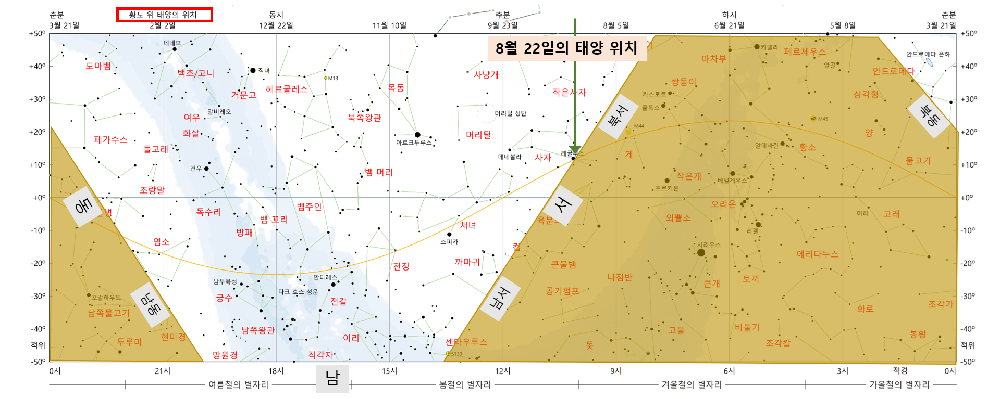
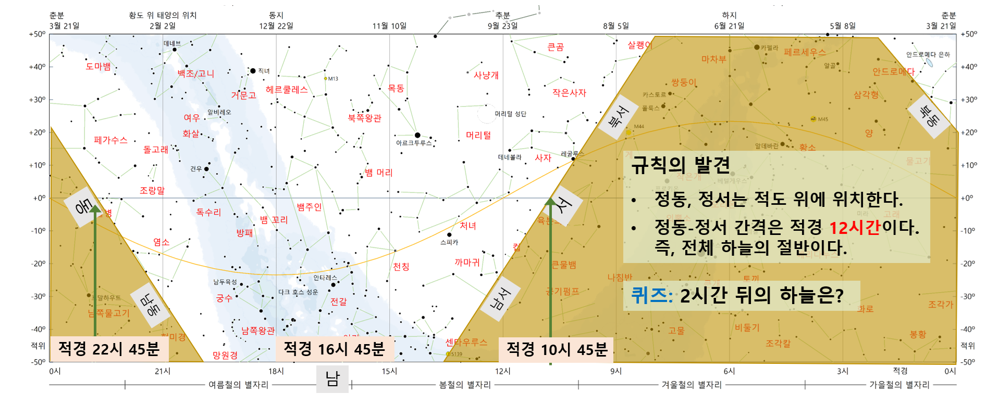

별바라기 홈 >
도움말
천문 소프트웨어
별바라기와 별하늘 이해
신명근
2026년 08월 22일
목차
- '푸른하늘 은하수 하얀 쪽배에' 동영상 감상
- 별자라기 별자리 성도 살펴 보기
- 별바라기와 함께 우주 여행
- 태양계 3차원 시뮬레이션
- 일/월식 찾기
- 일식 지도 보기
- 목성의 위성
- 달 관측
- 별바라기는?
- 별바라기 시작하기
- 일반 성도: 태양계 대상의 궤적 확인
- 별바라기 홈페이지 / 유튜브 채널
'푸른하늘 은하수 하얀 쪽배에' 동영상
기억해야할 내용들
- 별하늘을 볼 때, 먼저 동서남북 방위를 확인합니다.
- 많은 성도/천체 사진에서 왼쪽이 동쪽입니다.
- (당연한 이야기지만) 하늘은 동쪽에서 서쪽으로 움직입니다.
- 가을철인 10월이지만, 여름철 별자리도 서쪽 하늘에 보입니다.
별바라기 별자리 성도: 방향 확인
- 퀴즈 07: 아래쪽 사각형 성도에서 동쪽은 어느 쪽인가요? 1. 왼쪽, 2. 오른쪽
- 참고로, 왼쪽이 동쪽이라고 할 때는 조건이 있습니다.
- 12시 방향에 북극이 있거나, 우리가 남쪽 하늘을 바라볼 때입니다.
- 우리가 보는 대부분의 성도는 12시 방향이 북쪽, 9시 방향이 동쪽입니다.
- 퀴즈 08: 위쪽 북극 동그란 성도의 카시오페이아자리에서 동쪽은 어느 쪽입니까?
- 퀴즈 09: 위쪽 북극 동그란 성도의 북두칭성에서 동쪽은 어느 쪽입니까?
별바라기 별자리 성도: 황도
- 성도를 볼 때는, 북극, 적도, 황도, 은하수를 먼저 확인합니다.
- 황도는 태양이 지나는 길이며, 태양은 1년에 한 바퀴 황도를 따라 이동합니다.
- 3월 21일 경 춘분을 시작으로 하지-추분-동지를 거쳐 별자리를 이동합니다. 별바라기 적도좌표계 시연.
- 태양이 적도 아래에서 위로 올라가는 시점을 춘분이라고 정의하며,
- 이곳을 춘분점이라고 하고,
- 적경 0시로 정의합니다.
- 페가수스 사각형의 왼쪽면이 적경 0시 근처에 있습니다..
- 퀴즈 10: 하지는 몇 월 며칠입니까?
- 퀴즈 11: 오늘 8월 22일 태양은 어디에 있습니까? 포인터로 가리켜 주세요.
별바라기 별자리 성도: 해가 진 직후의 별하늘 확인
- 별바라기 시연: 8월 22일 19시 15분 해가 진 직후의 서쪽, 동쪽하늘 확인.
- 마음의 눈으로 지평선을 성도에 그려봅니다.
- 사자와 컵 사이가 정서 방향입니다. 좌우로 컵, 삵쾡이까지 보입니다.
- 물병자리가 정동 방향입니다. 좌우로, 페가수스, 안드로메다, 염소가 보입니다.
- 마음의 눈으로 그린 지평선을 별자리 성도에 표시해 보겠습니다.
|

|
|

|
별바라기 별자리 성도: 해가 진 두 2시간 후의 별하늘 확인
- 규칙 01: 지평선의 정동, 정서 방향으 천구의 적도 위에 위치한다.
- 규칙 02: 정동-정서의 젹경 차이는 12시간이다.
별바라기 별자리 성도: 오늘 밤 별하늘 성도
- 좀 더 보기 편한 성도로 표현해 보겠습니다.
- 우리가 서 있는 땅의 지평선 위, 즉 머리 위 온 하늘의 별자리를 둥근 원 하나에 모두 압축해 담아낸 성도이다.
- 성도의 중앙은 머리 위 천정이 되며, '동서남북' 글자가 쓰여진 둥근 원은 지평선을 가리킨다.
- 성도는 매우 큰 비율로 축소되어 있다.
성도에서는 작게 보여도 하늘에서는 매우 크게 보인다.
- 따라서, 실제 하늘에서는 성도의 일부분만 한 눈에 확인할 수 있다.
- 참고: 별하늘 성도 도움말
별바라기 별자리 성도: 은하수의 별자리
- 이제 은하수를 살펴 보겠습니다.
- 은하수 중심부 전갈, 궁수의 왼쪽으로 독수리, 백조가 있습니다.
- 오른쪽으로는 센타우루스, 남십자, 돛, 고물, 큰개, 오리온이 있습니다.
- 퀴즈 10: 별자리 성도의 별 중 지구에서 가장 가까운 별은 무엇일까요?
- 이제 ㄹㄱ ㅋㅌ 별까지의 우주 여행을 시작하겠습니다.
별바라기와 함께 우주 여행
- 별바라기 > 도구 모음 > 우주여행 메뉴 선택
- 우주선을 타고 지구에서 1광년 떠나왔다고 생각해 주십시오.
- 아름답고 신비한 은하수의 모습을 느껴시기 바랍니다.
- 은하수에는 두 마리의 동물이 있습니다. 바로 다크호스와 에뮤 (호주의 국조)입니다.
별바라기와 함께 우주 여행: 우리은하의 모습
- 우리은하는 피자처럼 둥근 원반 모양입니다.
- 왼쪽 화면의 화각에 해당하는 영역은 빨간색 선 2개로 표시되어 있습니다.
- 우리은하의 중심에는 초대질량 블랙홀이 있습니다. 태양의 약 430만배의 무게라고 합니다.
- 블랙홀이 커다란 중력으로 주의 별들을 끌어 당기기 때문에 중심부에 많은 별들이 모여서 밝게 빛나고 있으며, 이것을 팽대부라고 합니다.
- 우리은하는 막대 모양의 팽대부를 가지고 있습니다.
- 나선팔, 지구의 위치, 백조/오리온 팔
- 별자리 방향, 24시간 별바라기 별자리 성도와 함께 설명.
- 은하 원반에 존재하는 성운·산개 성단 살펴 보기, M45, 사투르누스 성운, 신의 눈동자
- 구상 성단 살펴 보기, 우리은하에 150여개 존재, 몇 십만개의 별이 모여 있고, 블랙홀을 품고 있는 것도 있다.
태양계 3차원 시뮬레이션
- 메뉴 > 도구모음 > 태양계 3차원 시뮬레이션
- 도구모음 > '혜성' 아이콘 > 스위프트-터틀 혜성 선택
- 혜성의 궤도 요소 확인. 근일점 1992년, 주기 133년, 궤도 경사각 113도.
- 혜성의 궤도가 지구 공전 궤도와 만나는 것 확인
- 근일점 위치도 확인. 혜성의 절대 등급이 가장 밝을 때임
- 1992년 11월로 날짜 설정하여 지구 궤도와 만날 때의 혜성의 속도 확인
- 매년 8월 12일 지구가 혜성의 궤도와 만나고, 이때, 페르세우스 별자리 방향. 벡터의 계산 방법은 조만간 구현.
- 도구모음 > '혜성' 아이콘 > 헤일밥 혜성 선택
목성의 위성
- 메뉴 > 도구모음 > 목성의 위성
- 목성의 위성 도움말
- 2024년 10월 영현상 관측 기록
- 팁: 오른쪽 월별 성도에서 밤 시간대에 2개 이상의 위성이 겹쳐서 지나는 시간대를 찾는다 --> 황홀한 영현상를 경험할 수 있다.
- 팁: 시뮬레이션 간격은 소수 단위도 가능함. 예를 들면, '0.5' 시간 입력 가능
- 2026년 12월 29일 저녁 관측: 3개 위성의 경/영 현상
토성의 위성
- 메뉴 > 도구모음 > 토성의 위성
- 토성의 위성 도움말
- 소구경 망원경으로는 3~4개의 위성만 볼 수 있다
- 2025년 테의 모양이 없어지는 것 확인. 시뮬레이션 간격을 100 시간으로 설정 후 '앞으로' 버튼 클릭
일식/월식
달 관측
별바라기는?
별바라기 시작하기
태양계 대상의 궤적 확인
- 궤적 그리기
- 예제01: 성도 > 열기 > '예제_기본10_목성의궤적_순행_역행_적도좌표계.sky'
- 예제02: 성도 > 열기 > '700.아날렘마_2021년.sky'
- 궤적 다이로그에서 '고도/방위각 기준 좌표 계산'이 체크 되어 있는 것 확인
- 홈페이지 > 재미있는 별바라기 > 태양계 > 태양의 무한궤도 아날렘마
- 예제02: 성도 > 열기 > '예제_이야기가흐르는밤01_.2022년 봄 행성들의 운동회.sky'
- 메뉴 > 도구모음 > 이야기가 흐르는 밤
- 다이로그에서 이야기 주제: '22년 봄 행성들의 회합' 선택
- '재생' 버튼 클릭
별바라기 홈페이지
별바라기 홈 >
최종 변경: 2026년 08월 22일